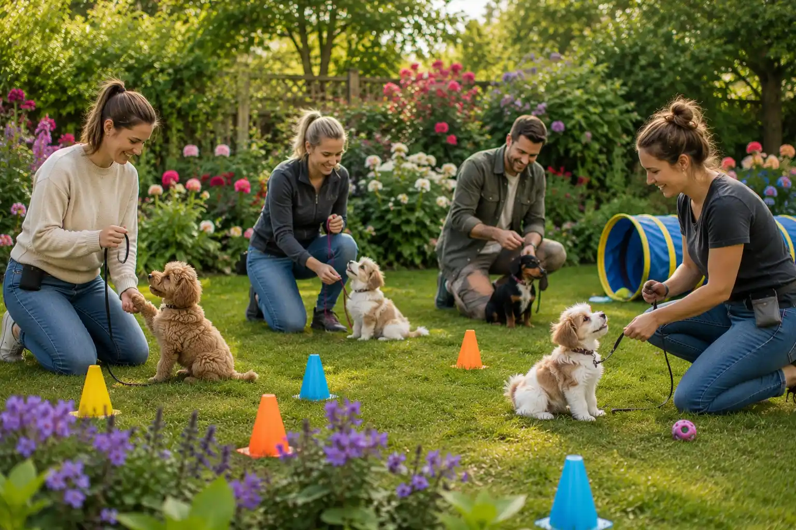

Träning
Valpträning utomhus
Träna tillsammans med din valp i en trygg och positiv miljö med fokus på kontakt, inkallning och vardagslydnad.

Praktisk information
- Plats
- Vasaparken
- Tid
- Tisdagar kl. 17.30
- Längd
- Cirka 45 minuter
- Pris
- 120 kr per tillfälle
- Passar för
- Valpar och unga hundar som behöver träna kontakt och vardagslydnad
Om aktiviteten
Valpträningen passar dig som vill stärka kontakten mellan dig och din valp på ett lugnt och positivt sätt. Övningarna är enkla och anpassade för unga hundar som håller på att lära sig vardagens grundläggande rutiner.
Under träningen arbetar deltagarna med kontaktövningar, inkallning och vardagslydnad. Målet är att skapa trygghet, tydlighet och samarbete mellan hund och ägare i en miljö där valpen också får träna på att vistas nära andra hundar.
Aktiviteten fungerar bra för hundägare som vill få inspiration till hur man kan träna korta stunder i vardagen och samtidigt bygga en positiv relation med sin hund.
Att tänka på
- Ta med små hundgodisar som valpen tycker om.
- Ha valpen i koppel under hela träningen.
- Ta gärna med vatten och en filt om valpen behöver vila.
- Håll träningspassen korta och positiva.